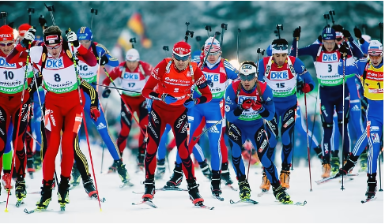
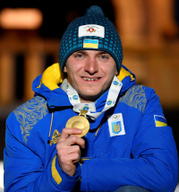
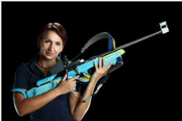

Декілька фактів про біатлон і біатлоністів
Кілька років тому назад я захопилася біатлоном - справжнім мистецтвом серед зимових видів спорту. Хочу і вас ознайомити з кількома цікавими фактами про цей чудовий вид спорту.
Біатлон
– це зимовий вид спорту, двоборство, що поєднує лижні перегони і стрільбу лежачи та стоячи на кількох вогневих рубежах з дрібнокаліберної гвинтівки.
Пропоную вам ознайомитися з деяким фактами :
- Перші змагання, що включають лижні гонки і стрільбу по мішенях, відбулися в 1767 році в Норвегії. Вони проходили в 3 етапи, а приз діставався двом кращим учасникам, які після лижної дистанції точно потрапили по мішенях, розташованим на відстані 40-50 метрів.
- Перший чемпіонат світу з біатлону пройшов в Австрії 2 березня 1958 року. Ця дата є днем народження біатлону.
- Біатлон включили в Олімпійські ігри через пару років, взимку 1960 року. Першим чемпіоном тоді став швейцарський спортсмен.
- Цікаво, що існує також літній біатлон. Замість лиж там використовуються лижоролерів, велосипеди або звичайний біг. Перший чемпіонат з літнього біатлону пройшов в Австрії в 1996 році.
- Гвинтівки для біатлону важать мінімум 3.5 кг, а при спуску гачка вказівний палець відчуває зусилля не менше 500 гр.
- Одне з правил біатлону строго забороняє залишати стрілецький килимок, коли гвинтівка заряджена. Був випадок, коли один з норвезьких біатлоністів, упустивши патрон, потягнувся за ним і ступив з килимка. Через це вся збірна була дискваліфікована.
- У 1999 році Міжнародний клуб біатлоністів заснував Клуб «Зеро», в якому знаходяться спортсмени, які стали чемпіонами світу чи завоювали золоті медалі на Олімпіаді.
- Найуспішніший біатлоніст – норвежець Уле Ейнар Бьорндален. Француз Мартен Фуркад намагався перевершити досягнення норвезького біатлоніста але не встиг (завершив свою кар'єру в 2020 році).
Змагання з бітлону проходять на етапах Кубку світу, Чемпіонаті світу або зимовій олімпіаді (в залежності від року) і тривають весь зимовий сезон (з кінця листопада по березень наступного року).
Вболівальники обожнюють біатлон за динамічність і видовищність.
Пробіжимося трохи по основним дисциплінам:
Індивідуальна гонка
Класична дисципліна в біатлоні. Не є самою видовищною але найстаріша і найскладніша дисципліна цього виду спорту. Індивідуальна біатлонна гонка складається з п'яти кіл, після чотирьох з яких спортсмени змагаються в точності стрільби. Біатлоністи стартують з інтервалом від 30 секунд до 1 хвилини. Спортсмени самі обирають собі місця на стрільбищі. На відміну від інших індивідуальних дисциплін, за промах у такій гонці біатлоніст карається не штрафним колом завдовжки 150 метрів, а додаванням до загального часу однієї штрафної хвилини. Як уже було зазначено, спортсмени проходять чотири вогневі рубежі в такому порядку: лежачи, стоячи, лежачи, стоячи (по 5 пострілів на кожному з рубежів). Таким чином, якщо біатлоніст примудрився допустити 20 промахів за результатами 20 пострілів — до його часу будуть додані 20 штрафних хвилин. Найскладнішим у індивідуальній гонці є поєднання витривалості та влучності стрільби. Пробігти в пристойному темпі 15 чи 20 км і продемонструвати на вирішальній стрільбі 100%-й результат — саме та навичка, до вдосконалення якої прагне більшість біатлоністів.
Гонка преслідування (пасьют)
Гонка переслідування абсолютно унікальна та не схожа на інші біатлонні дисципліни. Головною особливістю пасьюта є те, що спортсмени стартують не кожні 30 секунд та навіть не одночасно, як це проходить у мас-стартах, а з тим відставанням, з яким вони фінішували у спринтерській гонці. І, що логічно, в тій же послідовності. Таким чином, пасьют фактично є продовженням спринту, що проводився напередодні. Хоча в історії відомі випадки, коли гонка проводилася після «індивідуалки» або «мас-старту». Класичною дистанцією для гонки переслідування є дистанція протяжністю 10 км для жінок та 12,5 км для чоловіків. Таку відстань біатлоністи зазвичай долають за 30-37 хвилин, залежно від певних факторів. Пасьют у біатлоні складається з п'яти рівних кіл. Стріляють біатлоністи чотири рази: спочатку двічі лежачи, а потім двічі стоячи. За припущення промахів спортсмен відправляється на проходження штрафних кіл. Право на участь у гонці переслідування отримують найкращі 60 спортсменів попередньої гонки (у випадку відмови будь-кого із них від старту «звільнене» місце не займається рештою спортсменів, що залишилися).
Масстарт
Найвидовішниша й найбільш контактна дисципліна в сучасному біатлоні. Як випливає із назви, всі учасники гонки стартують одночасно та змагаються в «режимі реального часу», тобто боротьба на дистанції повністю відповідає реальному положенню спортсменів. Гонка з масовим стартом проводиться не так вже й часто — на трьох-чотирьох етапах Кубка світу, а також на Чемпіонаті світу. Це можна пояснити тим, що масстарт є елітною дисципліною, в якій беруть участь лідери загального заліку. Дистанція гонки становить 15 км для чоловіків та 12,5 км для жінок. Масстарт нараховує п'ять кіл та чотири вогневих рубежі: спершу спортсмени двічі стріляють лежачи, а потім двічі - стоячи. Допустивши промах, біатлоніст відправляється на штрафне коло довжиною 150 метрів. Зазвичай гонка з масовим стартом триває до 40 хвилин. Масстарт — особливий вид програми, в якому беруть участь тільки елітні спортсмени. До сезону 2010–2011 в гонках із масовим стартом стартували 30 лідерів загального заліку, проте регламент змагань зазнав змін: тепер право стартувати у відповідній гонці отримують 25 лідерів загального заліку, а також 5 спортсменів, які найкраще виступили на конкретному етапі.
Естафета
Одна з найстаріших й найулюбленіших вбоівальниками і спортсменами дисципліна в сучасному біатлоні. Це командне змагання у біатлоні. Команда у чоловіків, жінок та юніорів складається з чотирьох спортсменів - представників однієї країни, а у юніорок, юнаків та дівчат - з трьох. Кожен біатлоніст проходить один етап, що становить 7,5 км для чоловіків, юніорів та юнаків та 6 км для жінок, юніорок та дівчат з двома вогневими рубежами. По одному представнику від кожної країни стартують одночасно і, пробігши свій етап, передають естафету наступному біатлоністу зі своєї команди. Перша стрільба - лежачи, друга - стоячи. Біатлоністи займають собі місця на стрільбищі відповідно до свого стартового номера. Спортсмен має по три запасні патрони на кожній стрільбі. Якщо біатлоніст витратить запасні набої, то за кожну незакриту мету передбачено проходження штрафного кола, що дорівнює 150 метрам.
По завершенню, хотілося б трохи розповісти про наших українських біатлоністів:
Дмитро Підручний

Український біатлоніст, чемпіон світу, чемпіон Європи, чемпіон та призер Зимової Універсіади, призер чемпіонатів Європи з біатлону, учасник та призер етапів кубка світу з біатлону. Учасник збірної України з біатлону на Зимових Олімпійських іграх у Сочі в 2014 році, Зимових Олімпійських іграх у Пхьонхані в 2018 році та Зимових Олімпійських іграх у Пекині в 2022 році.
Капітан чоловічої збірної України з біатлону.
10 березня 2019 року став першим українцем — чемпіоном світу з біатлону серед чоловіків, перемігши в перегонах переслідування.
Після повномасштабного вторгнення росії 24 лютого 2022 року прервав змагальний процес і призвався до лав ЗСУ. Але згодом було прийняте рішення, що Дмитро буде продовжувати тренувальний процес і буде захищати честь України на світовій арені.
Олена Білосюк (Підгрушна)
Українська біатлоністка, заслужений майстер спорту України, чемпіонка Олімпійських ігор у Сочі, чемпіонка світу, 5-разова чемпіонка Європи, переможниця і призерка етапів Кубка світу з біатлону. З 25 березня 2014 по 8 квітня 2015 — заступниця Міністра молоді та спорту України. Кавалер Ордена княгині Ольги ІІ та ІІІ ступенів, лавреатка Премії Кабінету Міністрів України за особливі досягнення молоді у розбудові України (2009). Капітан жіночої збірної України з біатлону.